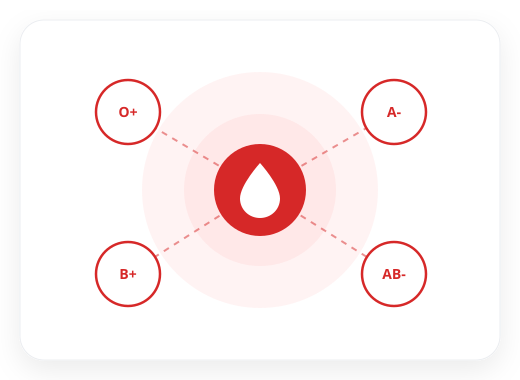

1. Speed Without Clutter
Minimal steps to filter by blood group, city, and availability so families spend time coordinating care rather than navigating complex menus.
BloodFinder is designed to make discovering compatible voluntary donors fast, organized, and respectful of donor privacy.
During accidents, surgeries, and critical care emergencies, locating the right blood group in the right city can feel overwhelming. Blood Donor Finder provides a structured digital hub where voluntary donors keep their availability current and families can search without friction.
This application is built as a modular, frontend-only healthcare demonstration using pure HTML5, CSS3, and Vanilla JavaScript. All donor entries, dashboards, and requests run locally using fictional data and browser localStorage, structured cleanly so PHP and MySQL backends can be integrated seamlessly in a future phase.

Every workflow is engineered around clarity, safety, and zero unnecessary barriers.
Minimal steps to filter by blood group, city, and availability so families spend time coordinating care rather than navigating complex menus.
Public donor listings never display personal phone numbers or home addresses. Requesters initiate structured contact requests instead.
Clean semantic forms, modular CSS, and isolated JavaScript data stores make transitioning to PHP & MySQL straightforward without redesign.
A quick reference showing standard red blood cell compatibility across all eight major blood groups.
| Blood Group | Can Donate Red Cells To | Can Receive Red Cells From | Clinical Note |
|---|---|---|---|
| O- | All Blood Groups (O-, O+, A-, A+, B-, B+, AB-, AB+) | O- | Universal Red Cell Donor |
| O+ | O+, A+, B+, AB+ | O-, O+ | Most commonly requested group |
| A- | A-, A+, AB-, AB+ | O-, A- | High emergency value |
| A+ | A+, AB+ | O-, O+, A-, A+ | Widely needed for surgeries |
| B- | B-, B+, AB-, AB+ | O-, B- | Rare negative group |
| B+ | B+, AB+ | O-, O+, B-, B+ | Common in regional banks |
| AB- | AB-, AB+ | O-, A-, B-, AB- | Universal Plasma Donor |
| AB+ | AB+ | All Blood Groups | Universal Red Cell Recipient |